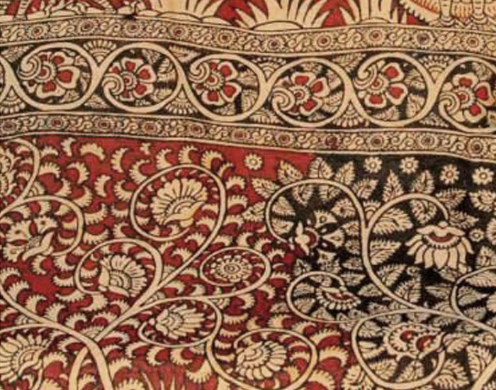
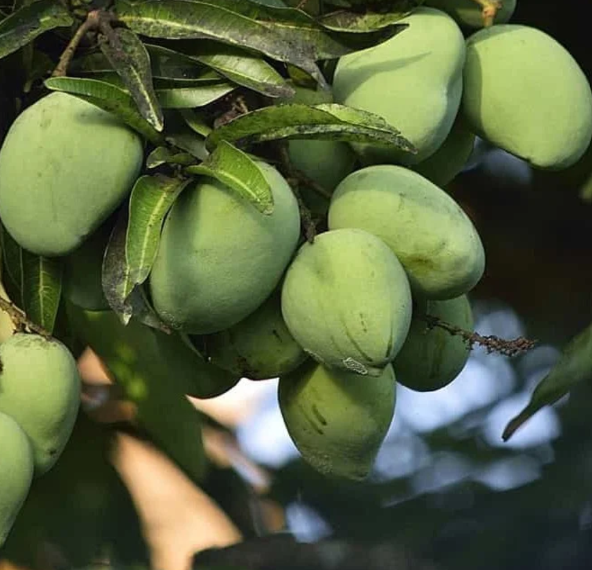

Tirupati Laddu

Origin: Tirupati, Andhra Pradesh
Description: Tirupati Laddu is the famous prasadam (offering) of Lord Venkateswara at Tirumala Temple. Made with gram flour, ghee, cashews, raisins, and cardamom.
Special Feature: First food item in India to receive GI tag status. Prepared under strict religious and quality guidelines.
GI Tag Year: 2014
Kondapalli Toys
Origin: Kondapalli, Krishna District, Andhra Pradesh
Description: Kondapalli toys are traditional wooden toys carved from softwood trees. They depict rural life, mythological characters, and animals with vibrant colors.
Materials: Tella Poniki wood, natural colors, and traditional carving techniques.
GI Tag Year: 2006
Machilipatnam Kalamkari
Origin: Machilipatnam, Andhra Pradesh
Description: Machilipatnam Kalamkari is a hand-painted or block-printed cotton textile using natural dyes. It features floral patterns, mythological stories, and Persian motifs.
Technique: Hand-painting and block-printing with natural vegetable dyes and mordants.
GI Tag Year: 2013
Banganapalle Mangoes
Origin: Banganapalle, Kurnool District, Andhra Pradesh
Description: Banganapalle mangoes are known for their unique sweet taste, golden yellow color, and thin skin. They have minimal fiber content and exceptional flavor.
Characteristics: Medium to large size, oval shape, sweet aroma, and excellent shelf life.
GI Tag Year: 2017